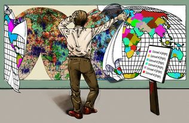

Unbounded Systems | |
|---|---|
|
|

|
Unbounded Systems
Many enterprise network systems are no longer "bounded" (i.e., a centrally networked environment, under organizational control, and full visibility to systems that are in a globally networked environment). Such stand-alone mainframe or corporate environments that were once physically isolated have evolved into distributed client server networks connected to the Internet with peer-to-peer services and networking. It is no longer the case that access is permitted only within the physical facilities that house the network: remote access is now a given.
Instead, enterprise network systems are "unbounded" (i.e., well-defined geographic, political, cultural, and legal or jurisdictional boundaries to systems characterized by the absence of these boundaries). Systems under centralized administrative control with trustworthy, known, inside users have evolved to systems with distributed administrative control, no central authority, and unknown users. These networked systems are interdependent instead of insular and fortress-like, with less distinction between system insiders and outsiders. Formerly well-defined outsider roles no longer fit customers, collaborators, partners, contractors, or vendors who have access to the network based on these roles.
System administrators of unbounded systems are often faced with the following issues [Allen 02]:
Do strategic and tactical security decisions concerning networks that are connected to the Internet recognize that there are no well-defined geographical, political, and technological boundaries?
Is there an active contact list of other system administrators for the primary networks that connect with our enterprise's network?
Are system administrators up to date on the latest threats, attacks, and solutions?
Are system and network configurations up to date with the latest patches?
Another effect on system administrators that is derived from unbounded systems is the shift from single responsibility to shared organizational responsibility to distributed responsibility. This is a shift from having a single point of known responsibility to correct failures to having shared, sometimes unknown, responsibility. In other words, going from "I know who to contact when I have a problem and I can describe the problem" to a situation better described as "I cannot precisely identify what or where the problem is and I may not know who to contact if it occurs outside of my organization's administrative control". System administrators of unbounded systems are often faced with the following issues [Allen 02]:
Do all authorized users know whom to contact when they detect suspicious, unexpected, or unusual behavior?
Do the recipients of this information know how to process each request, dealing with highest priority requests first, and who to contact for further assistance?